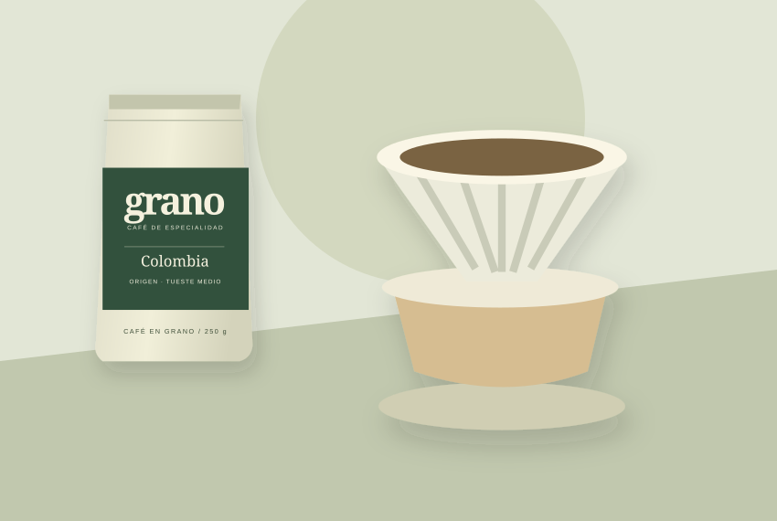

EL DIARIO
Haz espacio para una pausa
Pequeños hábitos alrededor de una buena taza.

Preparar café puede ser un momento para bajar el ritmo. No hace falta tener muchos accesorios: una taza, un método que conozcas y unos minutos son un buen comienzo.
Encuentra tu momento
Antes de trabajar o después de almorzar, guarda un espacio para preparar tu café con calma. Fíjate en el aroma y en cómo cambia el sabor cuando la bebida se enfría.
Prueba y comparte
Puedes comparar dos cafés de la colección o preparar una taza para alguien más. Anota qué te gustó de cada uno para elegir tu siguiente bolsa.
Nuestro ritual en movimiento
Descripción: animación de una taza de café y el momento de hacer una pausa.